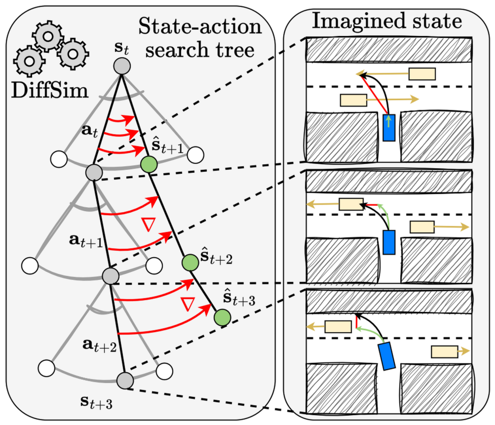
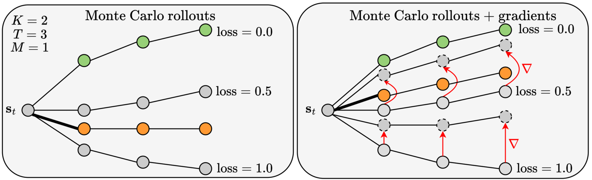
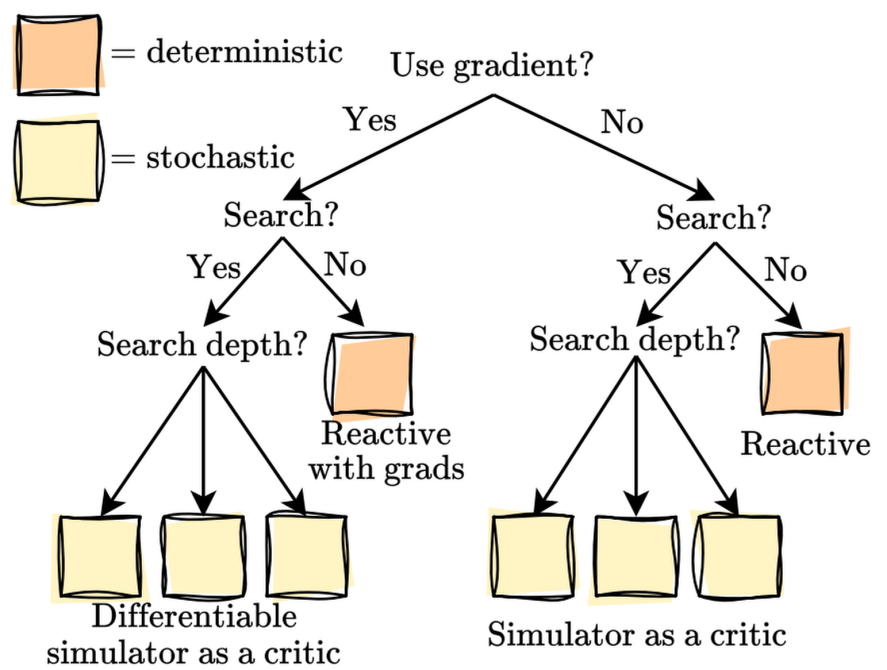
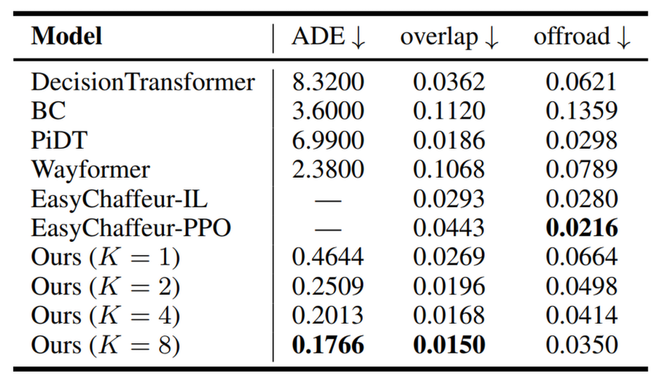
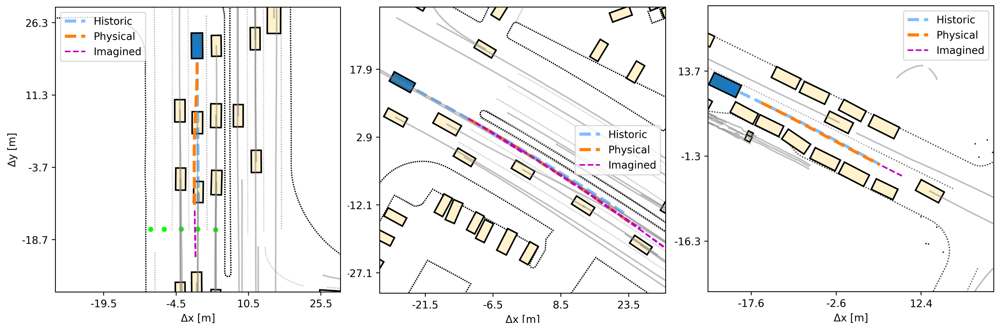

End-to-end control, planning, and search via differentiable physics

tl;dr
Planning at inference-time is the process of iteratively considering actions, imagining their effects, and searching for the best ones.
We use a differentiable simulator as the engine for this process. The resulting agent imagines different likely futures and performs
gradient descent in this virtual imagination, optimizing for its best action sequence given the expected behavior of all other agents.
Planning allows an agent to safely refine its actions before executing them in the real world. In autonomous driving, this is crucial to avoid collisions and navigate in complex, dense traffic scenarios. One way to plan is to search for the best action sequence. However, this is challenging when all necessary components – policy, next-state predictor, and critic – have to be learned. Here we propose Differentiable Simulation for Search (DSS), a framework that leverages the differentiable simulator Waymax as both a next state predictor and a critic. It relies on the simulator's hardcoded dynamics, making state predictions highly accurate, while utilizing the simulator's differentiability to effectively search across action sequences. Our DSS agent optimizes its actions using gradient descent over imagined future trajectories. We show experimentally that DSS – the combination of planning gradients and stochastic search – significantly improves tracking and path planning accuracy compared to sequence prediction, imitation learning, model-free RL, and other planning methods.
Plannig is the process of selecting the right actions by predicting and assessing their likely effects.
One way to perform planning is to search for the best action sequence across multiple candidates. We demonstrate that differentiable
simulation is well-suited for this search problem and enables very efficient planning.
Intuitively, to plan effectively, one needs three modules:

A typical planning agent that searches over action sequences works by imagining a few future trajectories, of a fixed length. In the figure above, there are K = 2 trajectories (gray),
each of length T = 3 steps. If the simulator is not differentiable, we can still use it to accurately score each trajectory, assigning a loss for them. The final action, shown as a bold black line,
is then selected by averaging the first actions from the best imagined trajectories.
In contrast, when the simulator is differentiable, we can compute the gradients of the loss with respect to the imagined ego-actions. They show exactly how the actions should be changed
so that the loss decreases as fast as possible. After taking a single gradient descent step over the actions in this imagined space, the new trajectories are improved, shown as dashed gray circles.
Averaging the first actions from the best new trajectories typically results in a much better action, which when executed in the real environment, produces a
trajectory (orange) much closer to the best one (green). Thus, the unique feature of a differentiable simulator is that it allows the planning agent to search for the right actions in a more precise,
instructive way.
Our framework, Differentiable Simulation for Search, provides a rich testbed consisting of diverse agentic behavior. The case when the agent doesn't search across multiple imagined sequences or use
the environment's differentiability provides a reactive baseline. If it doesn't search but relies on the differentiability, it is reactive with gradients.
If it searches without using gradient descent, this represents a simulator as a critic setting. Finally, if it both searches and optimizes its actions, this is the
our full proposed differentiable simulator as a critic setting.

We evaluate in Waymax, over the scenarios from the Waymo Open Motion Dataset. We show that in a tracking experiment, our agent performs
as much as 16.9 times better than the reactive setting, when measuring the average displacement with respect to the expert trajectory. This is evidence that our planning approach is useful for producing
safer and more accurate trajectories. Even when comparing against well-established and state-of-the-art behavior cloning, reinforcement learning, and sequence prediction methods,
our planning approach yields superior results, showing humanlike driving and less collisions.

The figure below shows qualitative samples from our planning agent. The ego-agent is blue. Its executed trajectory is dashed orange, while the ground-truth expert one is blue.
The agent drives by periodically imagining the future of its own motion and the other agents, and updating its actions so as to minimize a planning loss in this imagination.
We show imagined trajectories in purple. In the first and last plots we only show the imagination after a certain timestep, while in the middle we show multiple imagined trajectories,
from multiple timesteps. Overall, the obtained motion is realistic and humanlike, providing evidence that differentiable simulation can be used in yet another way,
to guide the search process for the best actions at inference time.

@inproceedings{nachkov2025search,
title={Autonomous Vehicle Path Planning by Searching With Differentiable Simulation},
author={Nachkov, Asen and Zaech, Jan-Nico and Paudel, Danda Pani and Wang, Xi and Van Gool, Luc},
booktitle={Proceedings of the AAAI Conference on Artificial Intelligence},
year={2026}
}